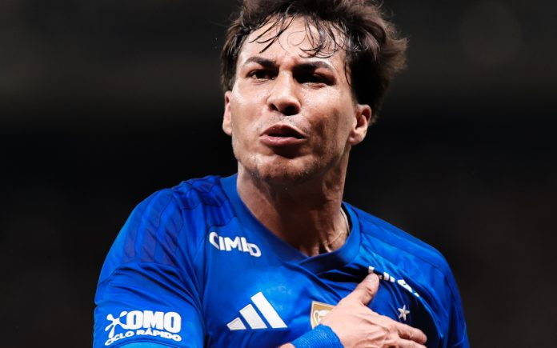
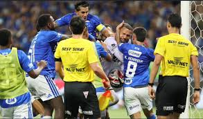

Sobre a Partida
O aguardado clássico mineiro válido pela final do campeonato ocorreu em . A partida foi supervisionada pela FMF e teve como palco o estádio Governador Magalhães Pinto, popularmente conhecido como "Mineirão". O resultado consagrou a equipe do Cruzeiro com uma vitória de 1 x 0, placar de suma importância construído com um gol no segundo tempo.
O clima no estádio era de extrema tensão, refletindo o peso de uma decisão. O encerramento do jogo foi lamentavelmente marcado por uma confusão generalizada que inviabilizou o protocolo formal de encerramento da arbitragem. Sobre o espírito esportivo que deveria imperar no futebol, o portal de sustentabilidade esportiva ressalta:
O fair play não é apenas uma regra escrita, mas uma atitude fundamental de respeito ao adversário que preserva a integridade física e moral do esporte.
Para consultar os regulamentos que regem as punições aplicadas no jogo, acesse o site oficial da Federação Mineira ou leia a documentação de regras da confederação nacional.
Tópicos e Cronologia
Informações Gerais
- Árbitro Principal: Matheus Delgado Candançan
- Equipes em campo:
- Cruzeiro Esporte Clube SAF
- Atlético Mineiro SAF
- Local: Governador Magalhães Pinto "Mineirão"
Eventos Principais (Ordem Cronológica)
- Atraso de 8 minutos no início do jogo devido à fumaça de fogos de artifício.
- Gol da vitória marcado pelo jogador Kaio Jorge aos 14 minutos do segundo tempo.
- Expulsão do goleiro Everson e do volante Christian aos 51 minutos do 2º tempo, sendo o estopim da briga.
- Encerramento precoce da partida por falta de segurança, seguido pela expulsão de diversos outros atletas nos vestiários.
Glossário da Súmula
- NR
- Sigla que identifica a marcação de um gol do tipo "Normal" (bola rolando).
- TER
- Sigla indicativa de ocorrência ou punição registrada "Após o Término do Jogo".
- SAF
- Sociedade Anônima do Futebol, modelo empresarial adotado juridicamente pelos dois clubes em campo.
Dados Disciplinares
Abaixo, a compilação detalhada dos primeiros jogadores punidos gravemente.
| Atleta Expulso | Equipe | Momento | Motivo Resumido (Súmula) |
|---|---|---|---|
| Everson Felipe Marques Pires | Atlético Mineiro | 51:00 (2T) | Derrubar e atingir adversário no rosto com o joelho. |
| Christian Roberto Alves Cardoso | Cruzeiro | 51:00 (2T) | Atingir cabeça de adversário com a canela (força excessiva). |
| Fabricio Bruno Soares De Faria | Cruzeiro | Após o Término (TER) | Desferir socos e pontapés em adversários após o apito. |
| Renan Augusto Lodi Dos Santos | Atlético Mineiro | Após o Término (TER) | Desferir socos e pontapés em adversários na confusão geral. |
| Lucas Daniel Romero | Cruzeiro | Após o Término (TER) | Desferir socos e pontapés em adversários na confusão geral. |
| Gabriel Delfim Ferreira | Atlético Mineiro | Após o Término (TER) | Desferir socos e pontapés em adversários na confusão geral. |
| Kaio Jorge Pinto Ramos | Cruzeiro | Após o Término (TER) | Desferir socos e pontapés em adversários na confusão geral. |
| Joao Marcelo Messias Ferreira | Cruzeiro | Após o Término (TER) | Desferir socos e pontapés em adversários na confusão geral. |
| Junior Osmar Ignacio Alonso Mujica | Atlético Mineiro | Após o Término (TER) | Desferir socos e pontapés em adversários na confusão geral. |
| Alan Steven Franco Palma | Atlético Mineiro | Após o Término (TER) | Desferir socos e pontapés em adversários na confusão geral. |
| Givanildo Vieira De Sousa | Atlético Mineiro | Após o Término (TER) | Desferir socos e pontapés em adversários na confusão geral. |
| Kaua Prates De Almeida | Cruzeiro | Após o Término (TER) | Desferir socos e pontapés em adversários na confusão geral. |
| Lucas Hernan Villalba | Cruzeiro | Após o Término (TER) | Desferir socos e pontapés em adversários na confusão geral. |
| Cassio Ramos | Cruzeiro | Após o Término (TER) | Desferir socos e pontapés em adversários na confusão geral. |
| Matheus Henrique De Souza | Cruzeiro | Após o Término (TER) | Desferir socos e pontapés em adversários na confusão geral. |
| Walace Souza Silva | Cruzeiro | Após o Término (TER) | Desferir socos e pontapés em adversários na confusão geral. |
| Lyanco Evangelista Silveira Neves Vojnovic | Atlético Mineiro | Após o Término (TER) | Desferir socos e pontapés em adversários na confusão geral. |
| Fagner Conserva Lemos | Cruzeiro | Após o Término (TER) | Desferir socos e pontapés em adversários na confusão geral. |
| Ruan Tressoldi Netto | Atlético Mineiro | Após o Término (TER) | Desferir socos e pontapés em adversários na confusão geral. |
| Alan Steve Minda Garcia | Atlético Mineiro | Após o Término (TER) | Desferir socos e pontapés em adversários na confusão geral. |
| Gerson Santos Da Silva | Cruzeiro | Após o Término (TER) | Desferir socos e pontapés em adversários na confusão geral. |
| Angelo Smit Preciado Quiñonez | Atlético Mineiro | Após o Término (TER) | Desferir socos e pontapés em adversários na confusão geral. |
| Zander Mateo Cassierra Cabezas | Atlético Mineiro | Após o Término (TER) | Desferir socos e pontapés em adversários na confusão geral. |
Galeria do Jogo

